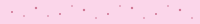
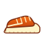
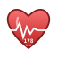
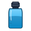
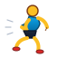

실제 앱 조사 — JournalArchiveSummary.tsx는 종합 요약,
MonthlyTrendBars.tsx는 월별 막대.
7일 단위 회고 페이지가 빔. 러너에게 주 단위 리듬이 가장 중요.
일요일 이후 첫 앱 실행 시 lazy 생성해서 사용자가 열 때만 확인할 수 있는 발견 지향 화면.
(v3.5 "22:00 자동 크론"은 브라우저 백그라운드 실행 불가로 폐기 · Handoff Risk §5 반영)
JournalArchive → 캘린더 뷰 or 날별 리스트JournalArchive에 "이번 주 요약" 카드 상단 추가 ·
매주 일요일 EngagementStrip 하단에 "주간 회고 준비됨" 알림 표시 ·
직접 접근 라우트: /journal/weekly/:isoWeek
JournalArchive mount 시 getOrGenerateWeeklyWrap(previousIsoWeek) 호출.
이미 캐시된 주차는 즉시 반환. 캐시 없으면 클라이언트에서 생성 후 localStorage.setItem("weekly-wrap-2026-W36", …).
계정 사용자는 weekly_wraps 테이블에도 upsert.
loadEntries() → 7일 범위 필터 → toAnalysisJournalEntry()로 변환. Post-session · Evening · Race 3종 모두.summarizeToDateDistances() · projectStructuredJournalObservations(). 이번 주 vs 지난 주 diff.loadDecorationState(). 이번 주 배치한 자산 ID 리스트 → 콜라주 렌더.EveningEntry.mood, painParts. 7일 curve + 2부위 timeline.engagement · reconcileJournalAwards() 기존 로직으로 주간 조건 도장 자동 발급.contenteditable · debounced autosave · Gowun Dodum 손글씨 폰트로 다이어리 감성SessionPrep 진입app/src/screens/JournalWeeklyWrap.tsx — 화면app/src/domain/weekly-wrap-generator.ts — 데이터 조합 로직app/src/domain/weekly-wrap-lazy.ts — getOrGenerateWeeklyWrap() 캐시 헬퍼JournalArchive.tsx 상단 카드 추가 · EngagementStrip.tsx 일요일 알림
IndexCard, MoodStrip, PainDot, EnergySystemLedgerPanel, decoration 카탈로그 · 자산 로직 100%.
self-reflection-2026-W36 키에 3줄 저장.weekly-wrap-2026-W36 등 ISO 주차로 저장LogDetail 로 이동DetailedPrescriptionViewuseState 기반 SPA — tab + viewForJournal.
Weekly Wrap은 저널 하위 뷰로 통합:
JournalArchive 상단 카드 "이번 주 요약" 클릭 → viewForJournal: {mode:'weekly-wrap', isoWeek}tab='journal', viewForJournal:{mode:'weekly-wrap'}viewForJournal을 {mode:'archive'}로 복귀. Home으로는 이동 안 함.
weekly-wrap-{isoWeek} 쿼리로 캐시 키에도 사용.
app/src/screens/__tests__/JournalWeeklyWrap.contract.test.tsx
[data-testid="hero-distance"]="42.3", hero-completion="6/7", hero-mood="4.1"
hero-distance-diff="▲ 3.1km" · class="up" 포함
highlight.sessionId = 최소 drift 세션 id
"테스트" 입력localStorage.getItem("self-reflection-2026-W36")가 {line1:"테스트", ...}
localStorage["weekly-wrap-2026-W36"] 존재getOrGenerateWeeklyWrap()가 캐시 반환 · generate() 미호출
reconcileJournalAwards()가 "꾸준함", "V2", "새벽", "집중" 4개 도장 발급